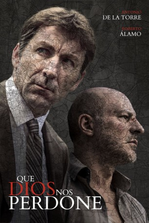
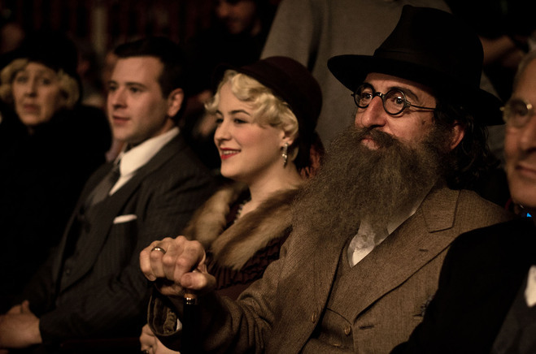

#8746 Die Morde von Madrid
 
 IMDB-Wertung: 7.2 / 10
IMDB-Wertung: 7.2 / 10  Metascore: 0
Metascore: 0 
Es ist Sommer in Madrid und die Wirtschaftskrise des Landes sorgt im Jahr 2011 für enormen Unmut in der Bevölkerung, der sich in politischen Unruhen und Protesten entlädt. Dass die Temperaturen Extremwerte erreichen, trägt nicht gerade zur Entspannung bei und die Polizei muss sich zusätzlich um Millionen Pilger sorgen, denn schließlich hat der Papst seinen Besuch angekündigt. In dieser aufgeladenen Situation haben die beiden Ermittler Velarde (Antonio de la Torre) und Alfaro (Roberto Álamo) alle Hände voll zu tun, denn ein Serienkiller treibt sein Unwesen in der Stadt und die Menschen sollen möglichst nichts davon mitbekommen. Doch wie lange können sie dessen Gräueltaten noch vor der Öffentlichkeit geheim halten? Die Uhr tickt, denn der Killer soll unbedingt vor dem Papstbesuch überführt werden…
Jahr: 2016
Dauer: 115 Minuten
FSK: 16
Land: Spanien Studio: Cherry Pickers FilmdistributieTonspuren:
Untertitel: Deutsch,
Auflösung: 1080p (1920x808) Größe: 3840 MB
Genre: Thriller, Drama, Krimi
Regisseur: Rodrigo Sorogoyen
Drehbuch: Isabel Peña
Soundtrack: Olivier Arson
Darsteller:
 Antonio de la Torre als Velarde
Antonio de la Torre als Velarde Roberto Álamo als Alfaro
Roberto Álamo als Alfaro- Javier Pereira als Andrés
-  Luis Zahera als Alonso
- Raúl Prieto als Bermejo
- Mónica López als Amparo
- Andrés Gertrúdix als Padre Raúl
- Alfonso Bassave als Céspedes
- Ciro Miró als Gabriel
- Estefanía de los Santos als Travesti 1
- Luis del Valle als Conserje Casa Alfaro
- Juan Verdú als Médico Amalia
- María de Nati als Elena
- María Ballesteros als Rosario
- José Luis García Pérez als Sancho
- Rocío Muñoz-Cobo als Juana
- Teresa Lozano als Amalia
- Fran Nortes als Rafael March
- Jesús Caba als Rubio
- Raquel Pérez als Forense
- Anna Laserna als Lorna
- Aitor Calderón als Nico
- Javier Tolosa als Cano
- María Jesús Garrido als Esperanza
- Paco Revilla als Padre Matji
- Maria Antonia Pérez als Anciana 1
- Carmen Esteban als Anciana 2
- Silvia Casanova als Anciana 3
- Alejandro Cano als Policía 1
- Chema Tena als Juanma
- Josean Bengoetxea als Mariño
- Andrea Dueso als Sobrina Barrio Salamanca
- Carmen Utrilla als Vecina Cotilla
- Javier Lago als Portero Calle Carretas
- Diego París als Travesti 2
- Germán Torres als Manuel
- Isidoro Ruiz als Amante Juana
- Raquel Meleiro als Secretaria oficinas
- Juan Motilla als Juez
- Jonathan Rod als Sesmillo
- Mon Ceballos als Municipal 1
- Enrique Asenjo als Municipal 2
- Asunción Díaz als Taquillera Teatro
- Iñaki Ros als Policía Veterano Escuchas
- Matilde Fluixá als Covadonga
- Juan Divassón als Policía 2
- Pedro Martín als Policía 3
- Carlos Nieto-Balboa als Jefe Operaciones GEO
- Andrea López als Niña Autobús
- Adolfo González de Castejón als Tipo Trajeado Comisaría
Datei: X:\2016(G-M)\Morde von Madrid, Die (2016, FSK16, 1920x808).mkv seit 26.04.2018
Festplatte: HD 2016(A-Z)
 Es gibt insgesamt 164 Filme in der Gruppe '2016(G-M)'
Es gibt insgesamt 164 Filme in der Gruppe '2016(G-M)'